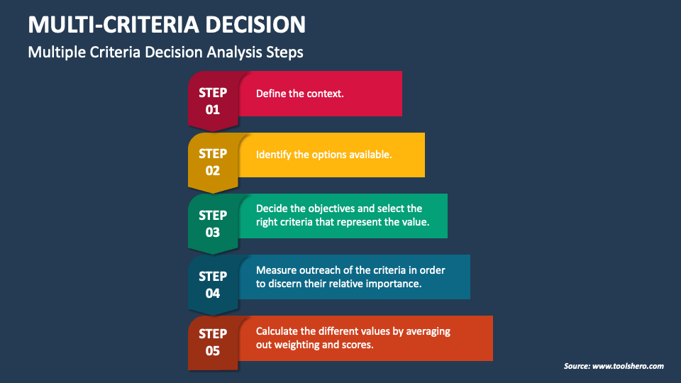

Multi-Criteria Analysis
Assessing the suitability of locations for floating solar parks
Multicriteria analysis (MCA) is an important application of GIS. It allows for the evaluation of multiple criteria in order to make a decision. This way, multiple considerations can be balanced when making decisions when it comes to trade-offs or setting priorities.
Project Overview
Multicriteria analysis (MCA) is a decision-making tool that allows for the evaluation of multiple criteria in order to make a decision. In this assignment, I will introducte the concept and apply it to present a workflow for determining the suitability of locations for floating solar parks in the Netherlands.
Theoretical Background
What is multicriteria analysis?
Multicriteria analysis (MCA) is a decision-making framework suited for solving problems in which multiple, often conflicting, criteria need to be considered.
The general steps taken in this systematic approach are illustrated in figure 1.
Consider the example of buying a new car. The future buyer could apply a MCA to make this important decision. Within the first step of the MCA process, the current situation,
key players and stakeholder in the decision making process are determined. The key player in our example is the buyer. Next, we identify the various alternative solutions to the
problem at hand. Options for the buyer are different types of cars (Skoda Yeti, Suzuki swift, Volkswagen Polo, etc.). The third step is to define the different criteria. A criteria is a
clear measure to compare the effects or value of an option. For the buyer the criteria may be price, fuel efficiency, environmental impact, or brand reputation. After this, each criteria
is weighed to reflect their relative importance. This weight indicates the difference between options and how much that difference matters. If all the alternatives differ in price by 50 euros,
the ‘ price’ criterion will not be weighed heavily, it will be of low importance. In the fifth step the weights are averaged, resulting in the values for each option. Each option is then evaluated
based on these values, resulting in a ranking. The best option will have the highest total value.

In the context of geoscience, problems or decisions include many different variables or aspects that need to be considered, so MCA can be used to rank different solutions! GIS often deals with different
layers of spatial data such as land use, soil type, or elevation. This makes MCA valuable in GIS, as it allows the integration of multiple spatial factors and criteria to identify optimal locations or
solutions for planning, resource management, and decision-making. Thus, MCA makes it possible to go from bulks of raw data to a supported policy decision.
Types of questions answered by MCA in GIS can concern the suitability of locations for specific land uses, the prioritization of areas for conservation or development, or the assessment of environmental impacts.
Examples include:
- Where is the best location for a new facility, given environmental, economic, and social criteria? (suitability analysis)
- Which areas are most suitable for conservation, agriculture, or urban development?
MCA workflow design
The problemAs cities and countries transition to renewable energy, solar power is becoming increasingly important. However, large solar farms often compete with agriculture, housing, and natural habitats for land. To contribute to the energy transition, floating solar parks can be installed on bodies of water, such as lakes and reservoirs. This way, land use conflicts can be avoided. However, not all bodies of water are suitable for floating solar parks, due to environmental, physical, and economic impacts and considerations. Stakeholders in the energy transition, such as the nationa government, water autorities, grid operators, environmental organizations, and local communities each have different priorities wich need to be balences in order to make complex decisions. The decision of where to instal such floating solar parks is complex, as the different objectives and criteria often conflix and need to be weighed against each other. For example, a technically ideal location may be rejected by the local community due to its recreational value. Thus, the goal of this MCA is to identify the most suitable locations for floating solar parks in the Netherlands, taking into account various criteria that affect their feasibility and impact.
The MCA approachThe question that this MCA aims to answer is:
Which bodies of water in the Netherlands are most suitable for floating solar parks?
The suitability of a body of water for floating solar parks depends on multiple factors. For this analysis, I consider various criteria which are relevant from a physical, environmental, and economical perspective. The following criteria are considered, and their contribution to the suitability is noted.
Infrastructure
This goes hand in hand with trade-offs, such as surface area (technical) and proximity to protected area (environmental). Large water bodies are favoured for floating solar panels, but usualy such water bodies are located in close proximity to protected areas.
The Data For this MCA, many datasets would be needed. The following GIS layers would be required:
Reflection
NO CONFUSION MATRIX This assignment showed me the potential of publcly available data. I enjoyed visuaizing the elevation of a place I am familiar with, and comparing it to a map of almost 240 years old. Discussion: also consider competing water use (shipping, recreation, fisheries)
Project Details
- Course: GIS and Cartography
- Instructor: Britta Ricker
- Date: 17 June 2026
- Study Area: The Hague
Software & Tools
- QGIS
- ArcGIS Pro
- Spectral Profile
- QuickMapServices
- Google Earth Engine
- Python